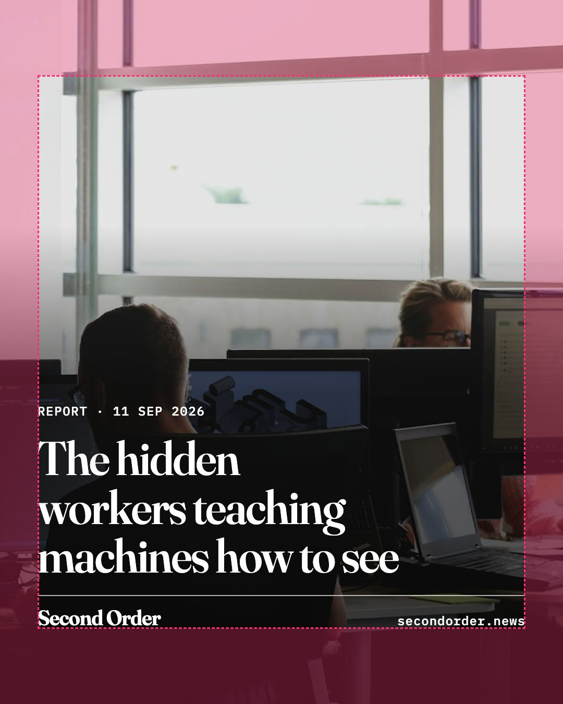
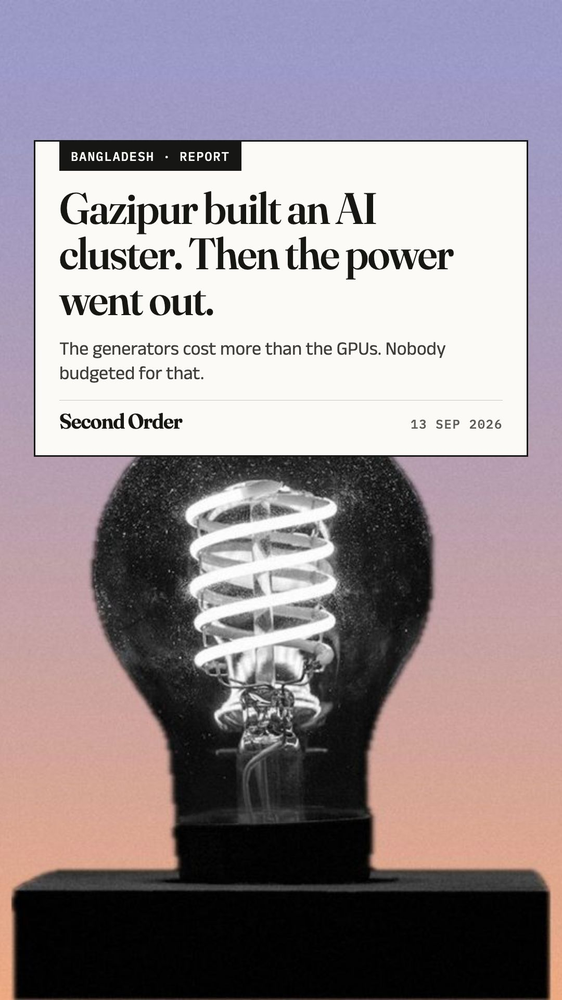
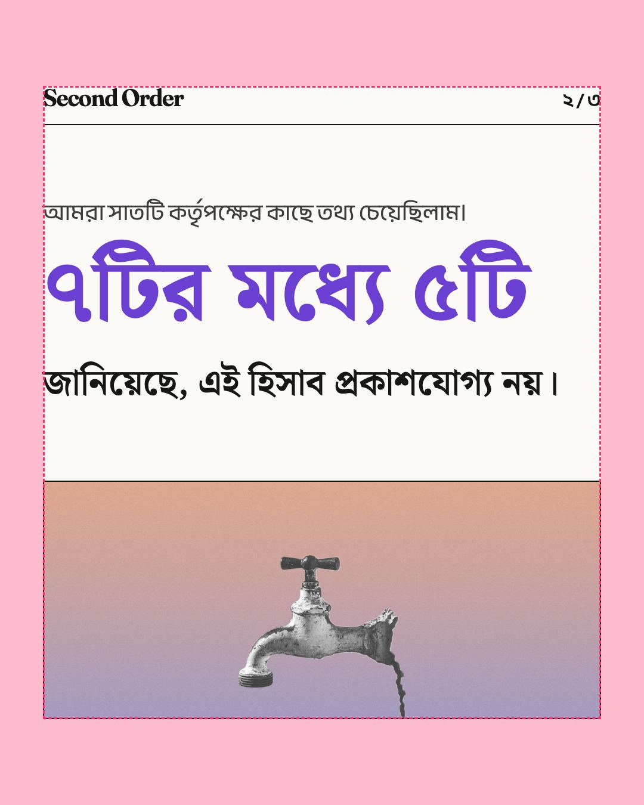
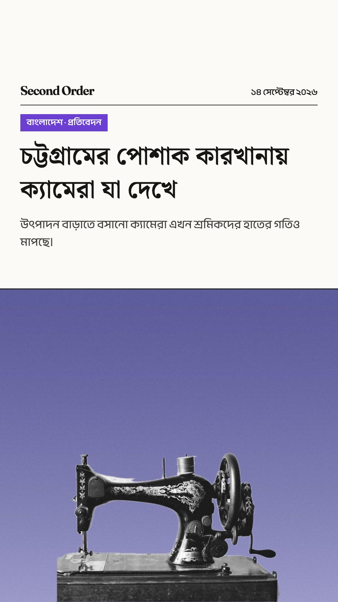

Social post trials · November 2026
How our words sit on a picture
These are trial designs for Second Order's posts on Instagram and Facebook: photo posts, stories and a carousel. They are sketches to choose a direction from, not finished work. Each one tries a different way of putting a headline on a picture, and says why.
Every design follows Meta's own rules for where words are safe. Turn on “Show safe areas” above to see the keep-clear zones drawn in pink. Select any design to open it at full size.
The rules
Where words are safe
Taken from Meta's Ads Guide and Business Help Centre. The two grid crops were measured on live pages.

Photo post and carousel, 4:5
Words stay 72 px in from each side and 144 px in from the top and bottom, so they survive Instagram's 3:4 grid and Facebook's square one.

Story, 9:16
Words stay out of the top 14%, the bottom 35% and 6% on each side. The picture can fill the whole frame.
Instagram · 1080 × 1350
Photo post

1. Words on the picture
Our own illustrations keep the object low and the top calm, so the headline sits on the picture's own colour, the way the site's story cards work. No black shade is needed.
Limit: only works when the picture has a calm area.


2. Mild black gradient
A real news photo is busy everywhere, so the lower part is darkened gently: nothing at the middle, about 70% at the bottom edge. The people in the upper half stay untouched.
Limit: darkens part of the photo.

3. Paper band, Bangla
The words never touch the picture, so any photo and any headline length works. Bangla needs taller lines, and the band gives them room.
Limit: the picture gets less of the frame.
Instagram · 1080 × 1920
Story

1. Gradient from the top, Bangla
The bottom 35% belongs to Instagram's bars, so the words go to the top of the safe area and the gradient fades out before the middle. The street stays clear below.


2. Paper card
The card carries its own contrast, so the picture needs no shade at all. The object sits in the lower zone, where words are not allowed but pictures are.

3. Solid block
Full contrast with no gradient. The photo fills the bottom zone, where the reply bar covers only a strip of it.
Instagram · three slides, one story
Carousel
The slide count, the margins and the name sit in the same place on every slide, so swiping feels like turning one object.

1. Cover
The headline on the picture, with a small prompt to swipe.


2. The number
The one figure worth remembering, taken from the story itself: five of the seven authorities we asked said the data could not be published.

3. End
Where to read the full report, on the brand colour.
Facebook · 1080 × 1350
Photo post

1. Mild white gradient
This photo is bright, so a white fade keeps it light where a black one would turn it grey. The people at the desks stay clear in the lower half.

2. Paper strips
Each line carries its own background, so the photo is left exactly as shot. Works on any picture.
Limit: the strips cover what is behind them.

3. Colour band, Bangla
Facebook readers often read the image without opening the post, so this version has room for a summary as well. The brand colour makes it ours at a glance.
Facebook · 1080 × 1920
Story

1. Gradient from the bottom
The headline ends exactly where the safe area ends, and the dark lower zone also makes Facebook's own buttons easy to read.


2. Paper block, Bangla
The same story as Instagram photo 3, reshaped for a story. Words on paper at the top of the safe area, the object in the free zone at the bottom.
Grid view
How the photo posts look when cropped
Both grids show only the middle of a post. The words were placed so that both crops keep them whole.
Instagram profile
Cropped to 3:4. About 34 px is lost from each side.
Facebook page, Photos tab
Cropped to a square. 135 px is lost from the top and from the bottom.